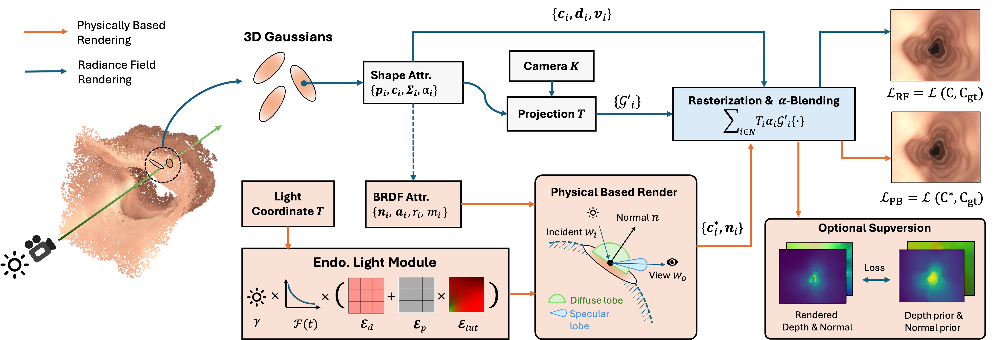

G
aussianS
platting withR
eflectanceR
egularization for Endoscopic Scene ReconstructionEndoscopic reconstruction plays a crucial role in surgical robotics. The dynamic lighting conditions and integrated camera-light source in endoscopic scenes create a distinct reconstruction challenge: shape ambiguity. To mitigate this, we propose a Gaussian Splatting (GS) based framework for endoscopic scene reconstruction, enhanced with reflectance regularization. We embed every 3D Gaussian point with physical reflective attributes and combine this representation with a physically based inverse rendering framework. By jointly training 3DGS for view synthesis with this reflectance regularization, we are able to attain high-quality geometry without changing the volume rendering pipeline. Our experiments demonstrate the superiority in both geometry representation and rendering performance compared to existing GS approaches, making it a practical solution for endoscopic applications.

In our framework, the endoscopic scene is represented as the reflective 3D Gaussian primitive, and we respectively use radiance field rendering and PBR to supervise the rendering result. In the deferred 3DGS branch, the color property is optimized to keep the ability in the novel view rendering. In the PBR branch, the Gaussian primitive reflects light from an optimizable radiant intensity distribution map and a light attenuation function based on the additional material and normal properties, thereby improving the geometric representation ability.